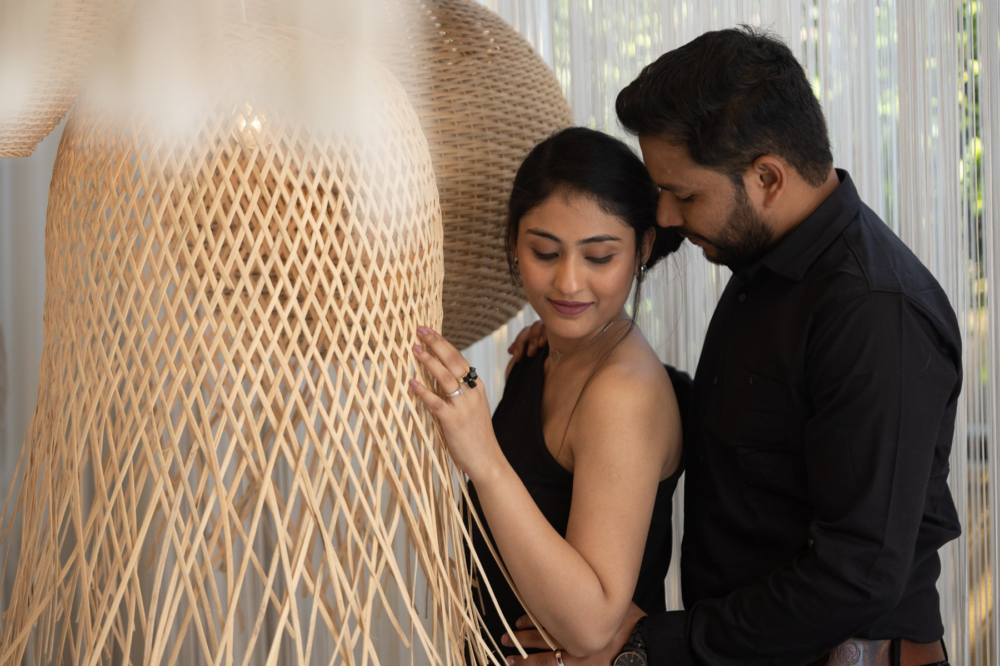
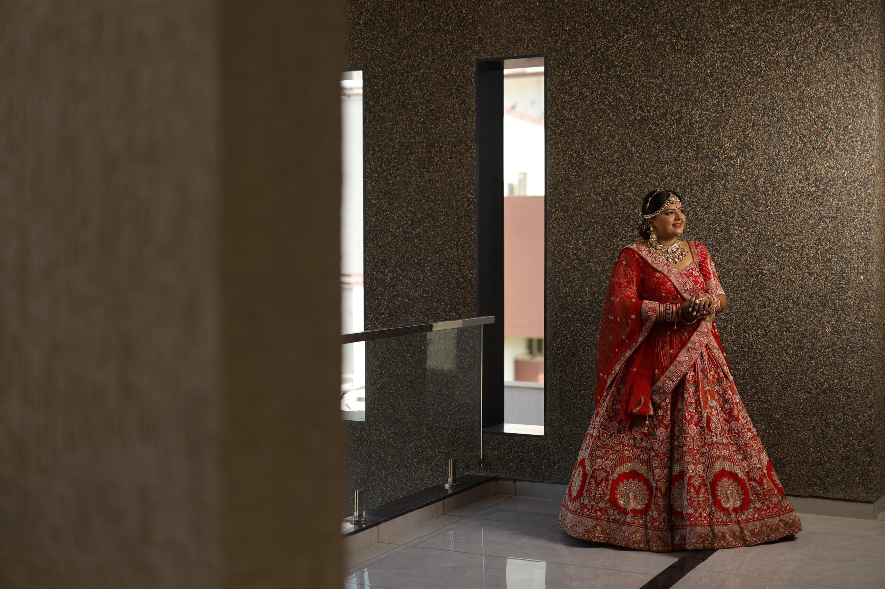
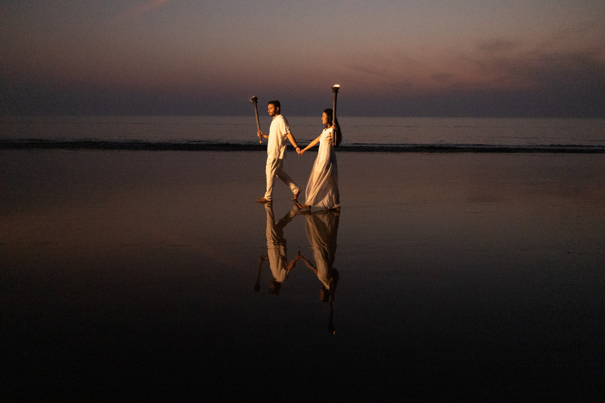
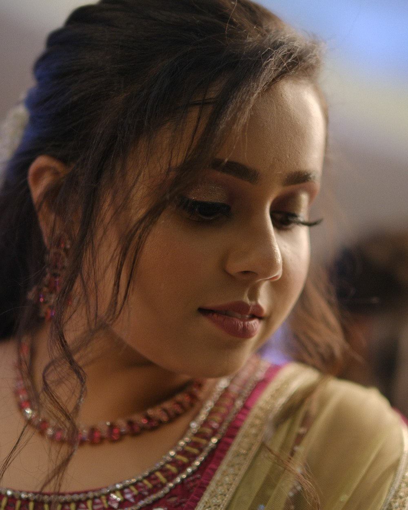
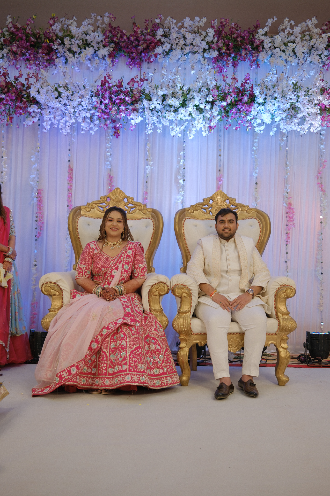
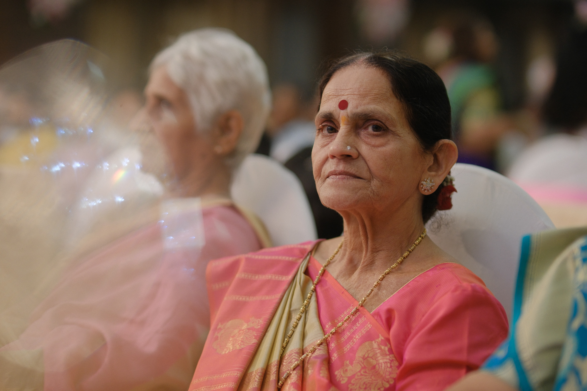

Stories,
preserved in frames.
A curated collection of celebrations, connections and quiet moments photographed as they naturally unfold.
Weddings • Pre-Weddings • Reception • Engagement • Corporate • Baby Shower



PRE-WEDDINGS
Unhurried portraits shaped by place, personality and connection.






ENGAGEMENT
The beginning of a promise, preserved with intimacy and elegance.




CORPORATE
Professional visual storytelling for people, teams, brands and events.


BABY SHOWER
Tender anticipation, family warmth and the joy before a new beginning.

The moments we could never recreate.
A few frames that stayed with us.


Found the feeling
you’re looking for?
Discover the people, places and moments behind the photographs.
COUPLE STORIES